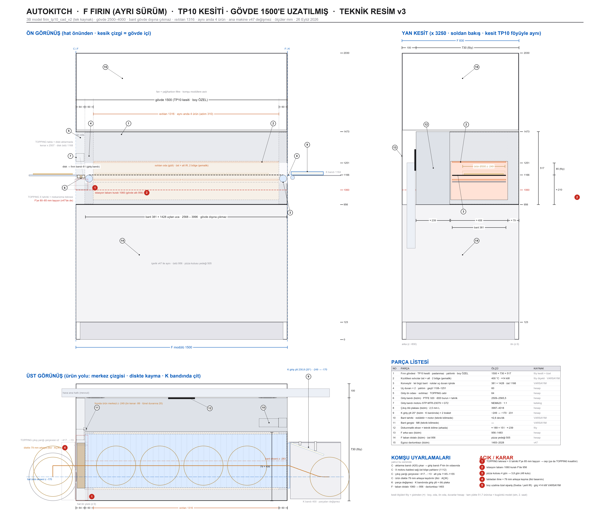

KESME + SPREY AYRI SAYFADA: 4b · KESME + SPREY (gerçek üretim modeli, animasyonlu). F fırın + K kesme tek istasyon sayılır (kural 4). Deneme sürümlerinin kaydı: TP10 v1 (katalog) · v2 (uzatılmış).
4 · FIRIN — TP10 kesitli kızılötesi konveyör fırın1500 × 730 × 517 · v48
Sveba Dahlen TP10'un kesiti aynen (730 derin, 517 yüksek, 381 bant, 85 ağız, kızılötesi üst/alt, 400 °C), gövdesi 960 → 1500 (F modülünün tamamı): bant hiçbir yerde gövde dışına çıkmıyor, uç ruloları uç duvarlarının içinde, ısıtılan 1316 = aynı anda 4 ürün. Ürün TOPPING'den giriş bandına, fırından ölü plakayla K bandına geçer. Üstünde havalı raf (pizza kutusu yedeği + kompresör), altında taban dolabı. Kemal 26 Eyl: “bizim yaptığımızda ölçüler kafadan atmaydı; gerçek fırının önünü arkasını istediğimiz ölçüye uzat, bant boş olmasın.” Modelin altındaki çubuktan kesit alabilir (X/Y/Z) ve iki noktaya tıklayıp ölçü çıkarabilirsin.
sürükle: döndür · üstüne gel: birim · çift tıkla: aç · alttan kesit + ölçü
1 · Ne yapar · ürün yolu
- Giriş: tabla aktarma konumunda (disk kenarı 2507); ürün diskte 79 mm arkaya kaydırılır (fırın bandı ekseni −249 — TP10 kesitinde bant ön yüzden 92,5 içeride) ve TOPPING'in genişletilmiş çıkış yarığından (−417…−13) fırının ön odasındaki giriş bandına itilir (PTFE 320, NEMA23 + GT2; F'ye köprü braketleriyle). Tabladan itme: AÇIK (itici tasarımı).
- Fırın: giriş duvarı 60 (rulo içinde) → ısıtılan oda 2624–3940 = 1316: kızılötesi üst + alt, 2'şer bölge, 400 °C; 3,5 dk pişme (kural 3.1) → adım 310'da 4 ürün; bant 381 × 1428 uçtan uca (2568–3996), üstü 1166. Çıkış duvarı 60.
- Çıkış: ölü plaka 3997–4018 (1165,5) → K bandı (1164, 4020'den). K bandı üstündeki 20° giriş çiti (4026 → 4257) ürünü −249'dan hat eksenine (−170) alır; kesme merkezi 4300. K'nin parçaları değişmedi.
- Üstü (1483–2028): havalı raf (3 mm, 5 mm takozlu): pizza kutusu yedeği 55 (dolaptaki 505 ile 560 = 2 gün; şarjör 567 ile 4 gün — kural 5.5) + TOPPING kompresörü JUN-AIR OF302-15B (kural 4'ün tek istisnası). Arka yarı egzoz davlumbazı (fan + yağ/karbon filtre).
- Altı (123–956): taban dolabı — önde bulaşık makinesi MEIKO M-iClean US, temizlik, pizza kutusu yedeği 505; arkada makine deterjanı, robot kontrol kutusu, ana pano, UPS. Gövde altı 956 (istasyon tabanı 1060 kuralının F istisnası: bant 1166'da kalsın diye).
2 · Özellikler
Kesit (föy)Sveba Dahlen TP10 (990004-002): 730 derin · 517 yüksek · bant 381 · ağız 85 · tünel 406 geniş, ön duvar 79, arkada 239 teknik bölme + dokunmatik ekran · kızılötesi üst/alt ayrı · 400 °C · TP10 9,5 kW / 160 kg / 0,34 m²
Boy (özel sipariş)gövde 1500 = ön oda 64 + giriş duvarı 60 + ısıtılan 1316 + çıkış duvarı 60 · uç kutusu yok · bant tahriki (redüktör + motor) ve gergi arkadaki teknik bölmede · güç ≈14 kW, ≈200 kg (VARSAYIM: TP10 boyla ölçekli) · Sveba ya da yerli kızılötesi konveyör üreticisine bu kesitle şartname
Kotlargövde 956–1473 · bant üstü 1166 · ağız 1166–1251 · üst raf 1481 · davlumbaz 1483–2028 · taban dolabı 123–956
Ürün eksenihat −170 · fırında −249 (ön kenar −99, tünel duvarına 20) · kayma girişte diskte, çıkışta K bandındaki çitle
Kapasitetam yükte 46,3 / 51,7 ürün/sa (1. / 2. saat, 3,5 dk) = özel kutu fırınla aynı; darboğaz robot (%100), fırın %69 · 4 dk'da da 52 (sim) · katalog TP10 (892) 49,3 idi
Ölçü kaynağıfirin_tp10_cad_v3.py (tek kaynak) · pafta FIRIN_TP10 v3 · ana montaj v48
Son kontrol (v48)gerçek katı kesişimi: fırın + uyarlama parçaları × TOPPING (tabla aktarmada dahil) + K + hava + kompresör + F kutuları + kendi arasında; ürün yolu Ø280 ve Ø300 zarf 10 mm adımla diskteki kaymadan K kesme merkezine: —
3 · Teknik resim

4 · Açık konular
| # | Konu | Durum | Not |
|---|---|---|---|
| F1 | Boy uzatma özel sipariş | AÇIK | Sveba TP10'u 1500 yapar mı; yapmazsa yerli üretici (Öztiryakiler, Senoven, Empero sınıfı) bu kesitle. Üreticiden: gerilim, bant kotu, gövde üst yüzey sıcaklığı (üstündeki raf için), STEP, PLC/Modbus |
| F2 | Tabladan itme + 79 mm kayma | AÇIK | tabla ürünü itmiyor (v47'de de açıktı); itici önce diskte 79 mm arkaya, sonra giriş bandına iter (iki hareket ya da eğik itici) |
| F3 | Fırın üstü raf sıcaklığı | ÖNERİ VAR | 5 mm hava boşluklu 3 mm raf; karton ve kompresör sıcak yüzeye değmez; yüzey sıcaklığı üreticiden |
| F4 | İstasyon tabanı 1060 → F'de 956 | KARAR | Kemal 26 Eyl v2 kabul: F istisnası (kural 4) |
| F5 | TOPPING'in F'ye taşması (85 mm) | ÇÖZÜLDÜ | TOPPING v24: X motoru sol uca, avara sağa, kelepçeler solda → tekne 2500'de biter; fırında cep yok |
5 · Sürüm geçmişi
- v48 (26 Eyl 2026 gece) · GEÇERLİ: TP10 kesitli 1500 fırın ana makinede (firin_tp10_cad_v3): cep yok, üstte havalı raf (kutu yedeği 55 + kompresör), davlumbaz arka yarıda. Kutu yedeği 4 güne tamamlandı.
- TP10 v2 (26 Eyl akşam): deneme sürümü — gövde 1500'e uzatıldı, boş bant yok, K bandında giriş çiti; Kemal kabul etti. kayıt
- TP10 v1 (26 Eyl): katalog TP10 hatta (boş bantlı, ≈3 ürün) — yetersiz.
- v47 ve öncesi: özel konveyör fırın KUTU (hazne 1400, adım 350) — ölçüler hesapsızdı (Kemal). Paftalar v7–v13.
- 6 Eyl (arşiv): Omake çift katlı taş fırın + kesme presi + sadeyağ kararı (tepsili 4200'lük hat) — terk edildi.
ARŞİV · 6 Eylül tepsili hattın fırın metinleri (Omake taş fırın, kesme presi, sadeyağ kabı) — geçerli değil
1 · Ne yapar · çalışma senaryosu
- Fırın gece KAPALI; açılış −20 dk ÖN ISITMA; servis boyunca BEKLEME 340 °C, 20 dk sipariş yoksa EKO 250 (→340 ≈ 3 dk = pide hazırlık süresi). "Kat hazır" = taş ≥ set −15 °C; 2. kat yalnız pik.
- Robot tepsiyi sprey nişine sokar (altı boş), 90° koni nozül 4 ml sadeyağ (0,5 sn), çeker.
- Motorlu kapak açılır, tepsi taşa konur (kulp 6 → 38 ≤ 40), 3–4 dk sabit sıcaklık/süre; kapak açılır, robot alır.
- Kesme presi: tepsi zemin plakasına dayanır, bıçak yıldızı (2 × 28, 4 parça) 24 V aktüatörle iner (0,85–1,1 kN), robot yalnız kulpu tutar.
- Sadeyağ: tek standart kap (yağ versiyonu, helezonsuz) sol slotta, 12 L = 30 gün; pompa arka duvarda; şamandıra 4 gün kala uyarır; eleman ayda 1 kapanışta değiştirir (dolapta sabaha erir).
2 · Özellikler · karar özeti
FırınOmake FPZ01.E21: 64×60×56, 57 kg, 4,8 kW 400 V, 2 hazne 40×40×10, 400 °C, 2 camlı kapak + ayrı termostatlarKapak motoru24 V lineer aktüatör + 2 switch + akım limiti; SSR + termokupl retrofitZonlar (v5, zeminden)plint 12 / pano 20 / KESME 50 / YAĞ+SPREY 30 (kap 15 | tepsi 34 | boş 15, sıcak dolap 42 °C) / fırın 56 / plenum+fan 12 / filtre 5 / yedek 12 = 197Havalandırmaplint girişi → yan/arka kanal → plenum → fan 140 m³/h → yağ filtresi + aktif karbon → üst ızgara (bacasız); yan 3 cm yalıtım (sol TOPPING +3, sağ PACK karton)Yağ4 ml/pide, 0,4 L/gün; tek kap 12 L = 30 gün, dolu 14,1 kg; 24 V dişli pompa 0,5 L/dk, ısıtmalı hat Ø6, çek valfKapasitetek kavite 12–15/saat, iki kavite 25–30 — günde 100 hedefi ve pik saat için yeterli; 150+/güne çıkarsa 3. kavite ya da konveyör (B planı)Neden kapalı hazneiki ucu açık konveyör tünelinde ısı sürekli kaçar (≈ 1.300–1.800 kWh/ay) — kapalı hazne + gece kapalı ≈ 500–800 kWh/ay; dikey istiflendiği için tek gövdede az yer tutarBıçak yıldızıCancan 1330 sınıfı yerli pizza dilimleme presinin paslanmaz çoklu bıçak yıldızı (4/6/8 dilim, yıkanabilir, yedeği bol); "birebir kesmesine gerek yok, bıçak izi yeter" → kuvvet düşük, 0,5 mm durdurucu tepsi kaplamasını çizmezAltyapı2 kat 4,8 kW — pano 380 V hazırlanır; gece kapalı + eko mod elektrik kaleminde ayda ≈ 2–4 bin TL tasarrufHijyenbıçak kafası tek hamlede çıkar, günlük temizlikte yıkanır
3 · Teknik resimler


4 · Tedarikçiler · fiyatlar
| Tedarikçi / ürün | Ne | Fiyat / durum |
|---|---|---|
| Omake FPZ01.E21 (Cafemarkt) | çift katlı taş fırın 64×60×56 | 40.169 TL |
| Atalay APF-40-2 / APF-40-1 | çift / tek katlı | 49.077 / 35.526 TL |
| Empero EMP.4 | tek katlı 52×52 | 37.830 TL |
| Karacasan dijital 30×4 | 7" LCD 99 program | 55.656 TL |
| Konveyör (Senoven SM-1100, Empero, Moretti T64E) | bant fırın | 283–371 bin TL — reddedildi |
| Effeuno P134H · Zanolli · TurboChef · Ovention | yurt dışı seçenekler | €799 – ithalat |
| Sadeyağ ünitesi | 24 V dişli pompa + ısıtmalı hat + nozül (entegratör) | 8–12 bin TL |
| Gold Medal 2395 / 2496 | sinema tereyağı dispenseri sınıfı hazır ünite (ısıtmalı tank + pompa) | ≈ 1.300 $ + nozül uyarlaması |
| Alibaba ısıtmalı sos dispenseri | pompalı, ısıtmalı | ≈ 185 $ (teyit gerek) |
| Cancan 1330 | pizza dilimleme presi — bıçak yıldızı kaynağı | birkaç bin TL, yedek bıçak bol |
| Kesme + sprey ünitesi (entegratör) | 24 V aktüatör + gövde + nozül + pompa | ≈ 15–25 bin TL |
5 · Soru işaretleri · açık konular
| # | Problem | Durum | Çözüm / not |
|---|---|---|---|
| O1 | Pide yanarsa / az pişerse | ÖNERİ VAR | reçeteli süre + kamera renk kontrolü |
| O2 | Motorlu kapak açılmazsa | ÖNERİ VAR | switch + 2. deneme + alarm |
| O3 | Peş peşe pişirmede taş soğur | DÜZELTİLDİ | 3 kW fırın 4 dk döngüde kendini yeniler |
| O6 | Gece açık kalmasın | ÖNERİ VAR | KAPALI / ÖN ISITMA / BEKLEME / EKO / PİŞİRME |
| O4 | Nozül tıkanması | ÇÖZÜLDÜ | gün sonu mini-CIP |
| O5 | Koku/duman | ÇÖZÜLDÜ | fan + yağ filtresi + karbon |
| F-T2 | Delikli tepside alt kabuk taş kadar çıtır mı | ÖNERİ VAR | pilot |
| F-T3 | Tepsi malzemesi ısı döngüsü | AÇIK | paslanmaz/alu pilot |
| O8–O10 | Yağ kabı: eleman değiştirir, tek kap, kuru bağlantı tipi | KARAR | CPC gıda tipi kaplin seçilecek |
6 · Sürüm geçmişi
- v5 (6 Eyl): tek standart yağ kabı, sağ slot boş
- v4 (6 Eyl): 2 standart kap + pompa arka duvarda + sprey ortada + KESME presi OVEN'e
- v3 (6 Eyl): kartuş 4 L, niş altı boş, plenum/fan/filtre, yan yalıtım, kolon 70
- v2 (6 Eyl): Omake seçimi, kontrol mantığı, sprey ünitesi, stok, satın alma
- v1 (Ağu): fırın kabini + tank